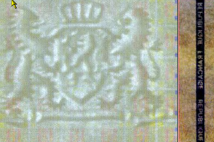
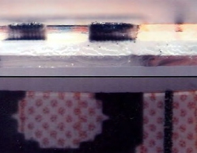
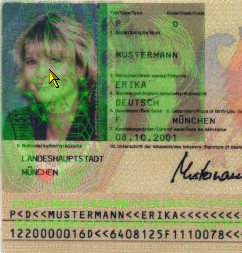

In Part II, I covered the basics of facial recognition, the biometric piece of the e-Passport, and how the technology works and is implemented. Unless you have never had a government photo taken of you in your adult life, or are willing to alter the bone structure of your face, the technology will probably be able to match you fairly accurately. In these parts, I cover the technical details of the e-Passport itself. It gets a bit dry. I cover document security, chip technology, encryption, and data security. So if the technical readouts of this battle station are of no interest, I won’t get my feelings hurt if you skip parts III and IV. Neither will the dead Bothans. Promise.
The goal of the passport specifications as developed by ICAO are meant, quite simply, to create the most secure document in the world. No small undertaking, and quite a distant goal to meet, but that’s the goal and they’ve made some effective decisions to try and reach it.
Now, anyone who has studied security in any depth probably realizes that nothing is secure. Security is a measure of how expensive it is to thwart the security measures. Previously, thwarting passport security was a fairly cheap endeavor. My current passport is a simple printed booklet with a paper photo laminated into the inside cover. I could probably create one with a decent photo copier, some scissors, and a laminating machine. But the new passport specs are designed to be more difficult to forge, tamper with, or steal than ever before. It will be easier to counterfeit money than to counterfeit a passport.
There are three threats to the security of the e-Passport; forgeries, falsifications, and illegal issuance. Forgeries involve the complete creation of a false passport. Falsifications take an existing legally issued passport and change the data on it. And illegal issuance is to convince the government to actually issue a legal passport to someone they didn’t want to, or to steal blank passports and issue them fraudulently.
The substrate of the passport, or the paper, is highly recommended to include several features that you’ll probably recognize from all the Monopoly™ money floating around the globe nowadays. UV reactive paper lights up all special and pretty under an ultraviolet lamp. Dual-tone watermarks are difficult for all but the top-end photocopiers to duplicate. Chemical reactions like those special pens they use to check a $20 can be built into the paper. Fluorescent fibers, colored flecks, and plastic threads are all options to make it difficult to reproduce legitimate looking passport paper.
|
 |
An example of UV reactive, chemically sensitive substrate with security threads.v |
The printing on the passport is also subject to a wide variety of security methods. These include background art and text, often in rainbow colored print. There can be UV printing that is invisible to the naked eye but shows up clearly under the same UV lamp. Micro printing and printed watermarks are also included. In addition, today’s printing techniques allow all of the above to be personalized to the passport. So there could be the bearer’s name micro-printed or UV-printed into the paper. Or perhaps the background art includes a UV version of the photograph. Personalization makes it impossible to get a generic template for the printer to run off a bunch of legitimate looking passports, because each one must be customized. And printing the data for the passport is not printing on the paper, but into the paper, laminate, or plastic. The result is that an ink-jet printed passport actually has ink injected into the substrate. You can’t scrape the ink off without damaging the paper, and the paper changes color and shows tampering very easily. Laser engraving into the laminate offers the same challenges, particularly when that laser engraving is personalized.
|
 |
An example of laser engraving into the laminate.vi
|
And of course, there are the neat-looking OVDs, or Optical Variable Devices such as holograms and foil printing. Previously we’ve seen OVDs on credit cards where they are a generic template. But on the passport, the OVDs can also be personalized, commonly to be either a hologram of the photo or even the entire visual passport. Another twist on this is using lasers to print refractive OVDs into the laminate of the data page. Obviously this all requires some very specialized equipment. Not so obviously, the equipment isn’t very big, and would fit fully assembled onto an average sized dinner table.
|
An example of a personalized OVD.vii
|
 |
Obviously these measures make forging or altering a passport much more expensive and difficult than previously. And that leads us to the weakest link in the chain, by ICAO’s own admission, fraudulent issuance of a real passport.
As in all automated systems, and all security systems, and indeed, all systems anywhere and everywhere, human beings can be both the strongest or weakest links in the chain. In order to secure against the fraudulent issue of legitimate passports, governments are encouraged to greatly tighten their issuance security at every point. From the ordering and storage of passport materials to the printing process to the application processing agents, they need to maximize security. They are also encouraged to make multiple people responsible for the approval of a passport so that anyone wanting to bribe their way into a fraudulent passport must bribe two or three or five people instead of just one.
Additionally, governments are encouraged to track all passports from cradle to grave, including spoiled and blank passports. Interpol’s I-24/7 Stolen and Lost Passport database will track any and all non-valid passports and is already in operation catching criminals with false passports today. And the passport itself is protected against unauthorized issuance by the RFID chip embedded within it. And that, in turn, leads us to the digital technology.
v Image provided by International Civil Aviation Organization
vi Image provided by International Civil Aviation Organization
vii Image provided by International Civil Aviation Organization